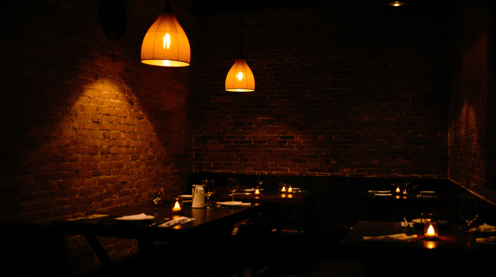

nu
pure asian cuisine
La sala serale di Milano est.
Cucina giapponese pura — sushi e specialità —
servita solo dalle 19:30.

La sala
Una stanza sola,
tenuta in penombra.
Mattoni a vista. Un pendente caldo su ogni tavolo. Il resto resta nell’ombra.
Non siamo un banco aperto tutto il giorno. Apriamo la sera, alle 19:30, e la cena comincia nel momento in cui entri dalla strada nella nostra pozza di luce.
- Solo cena
- Dalle 19:30
- Cucina giapponese
- Su prenotazione
Il banco
Al banco si lavora
un pezzo alla volta.
Il sushi si compone a mano, sotto la luce. Riso, pesce, misura.
Facciamo cucina giapponese e basta — sushi e specialità giapponesi. Nessuna deriva, nessuna scorciatoia: ogni sera un servizio seduto, al tavolo, piatto per piatto.
Il menù della sera
Sul banco, stasera.
Una selezione di sushi e specialità giapponesi. Il menù della sera può cambiare con il pescato.
Una tavola in penombra
Una sera per due,
senza fretta.
Un tavolo, una candela bassa, i mattoni alle spalle. Intorno, il buio caldo della sala.
Qui si viene per restare. Si ordina piano, si beve un calice, si lascia che la cena duri quanto deve.
Feltre · Milano est
Nel quartiere Feltre.
Via Feltre 70Milano est
Una facciata calma, la luce ambra che esce dalla vetrina sul marciapiede. Si arriva a piedi dal quartiere, o in pochi minuti da Milano est.
La sala parla
Il giudizio di chi è già venuto a cena
4,3 su 1.869 recensioni · Google
“Una sala piccola, calda, tenuta in penombra — e il sushi all’altezza.”
Il senso di quasi milleottocento recensioni, costante negli anni. Nessun nome inventato: solo il voto reale che la sala si è guadagnata, sera dopo sera.
Dettagli della sera
Le domande
che ci fanno.
Un posto solo-cena porta qualche domanda. Ecco le risposte, dette semplici.
Siete aperti a pranzo?
No. Facciamo solo cena. Apriamo la sera, alle 19:30.
Serve prenotare?
La sala è piccola, con pochi tavoli. Consigliamo di prenotare con una telefonata: vi teniamo il posto.
A che ora si può arrivare?
Dalle 19:30 in poi. La cucina è tutta della sera, servita al tavolo.
Cosa cucinate?
Cucina giapponese: sushi — nigiri, sashimi, maki — e specialità giapponesi calde. Niente di più, niente fuori tema.
Come vi contatto?
Con una telefonata al 02 2641 3212. Vi rispondiamo dalla sala.
Prenota
Un tavolo,
per stasera.
Una telefonata e vi teniamo il posto. La cena comincia alle 19:30.
Al telefono: 02 2641 3212
Preferisci WhatsApp?
Stiamo attivando il numero dedicato per la prenotazione: appena è pronto, lo trovate qui. Intanto, una telefonata basta.
Quando
Solo cena
Dalle 19:30
Su prenotazione
Telefono
Cucina
Sushi
Specialità giapponesi